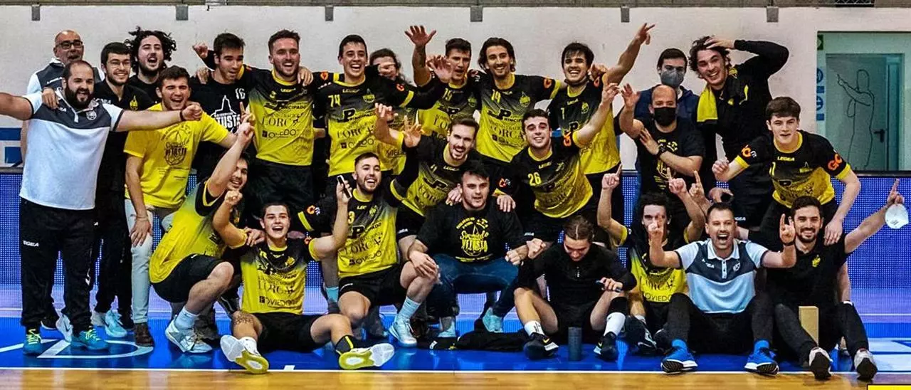

Historia
Fundación
Ascenso

En los años siguientes el Vetusta fue creciendo: amplió su estructura con la creación de un equipo filial y llegó a disputar una Fase de Ascenso a Primera Nacional en 2018.
Paralelamente, el acuerdo de colaboración con el Colegio Auseva permitió al club formar a varias generaciones doradas de jugadores, que conquistaron 2 Campeonatos de Asturias Infantil, 1 Cadete y 1 Juvenil, además de colarse en varias ocasiones en las fases finales del Campeonato de España.
La subida de estos canteranos al primer equipo supuso el definitivo salto de calidad: en la temporada 2020/2021 el Vetusta logró el ascenso a Primera Nacional tras ganar la Fase de Ascenso organizada en Oviedo.
Actualidad

El primer equipo se ha asentado en Primera Nacional. La temporada 2026/2027 será la sexta temporada consecutiva en la tercera categoría del balonmano español.
Al mismo tiempo, el Vetusta se ha convertido en una de las canteras de referencia del balonmano asturiano, contando a día de hoy con más de 220 jugadores repartidos en equipos tanto masculinos como femeninos, desde categorías de iniciación hasta senior.
Todas las temporadas
| Temporada | Categoría | Fase | Pos | PTS | PJ | PG | PE | PP | GF | GC | DIF |
|---|---|---|---|---|---|---|---|---|---|---|---|